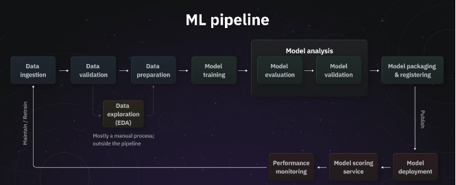

Hello! I'm SIMON KAMANDE NGUGI, a passionate and results-driven data analyst and data scientist with expertise in various technologies and tools. My journey in the world of data began with a curiosity for insights hidden within numbers. I have honed my skills in Python, SQL, Tableau, Power BI, MongoDB, machine learning, and building machine learning pipelines.
My analytical mindset and proficiency in handling complex datasets allow me to uncover valuable patterns and trends that drive data-informed decision-making. From data wrangling to model building, I enjoy every step of the data science process and take pride in delivering actionable solutions to real-world challenges.
I'm enthusiastic about exploring new techniques and methodologies to enhance my problem-solving capabilities. My experience also includes leveraging Excel for data visualization and performing statistical analyses. Additionally, I have a keen interest in deep learning and its potential applications in various domains.

Below is an end-to-end machine learning pipeline from data ingestion, data processing using a pipeline, model building, and evaluation to deployment using Flask and building a container using Docker,then deploying the model to AWS
Here is a masterpiece impelementation of a regression and a classification problem using PYSPARK In detail and indepth models using also pipelines for implementation. also are techinques on how to tune pyspark models for best perfomance
In the below model, we will be implementing an unsupervised machine learning model where we will be clustering customers into different clusters. The model is one of its kind, very elaborative, and very easy to implement.
In the projects below we are implementing machine learning tasks which are classification and regression using DEEP LEARNING and NEURAL NETWORKS The models are in details . I have fine tuned both models to achieve the best perfomance as possible

Here is an end-to-end classification model where we are predicting whether a person has a heart disease or not based on various factors. We have implemented the model and evaluated it and deployed the model using Flask and FastAPI, and definitely, we have dockerized the app.After dockerizing the app we have deployed the classification model using AWS ec2 instance.Thus this is an end to end model
IN the following model we are implementing a regression task where we are predicting the value of insurance based on various factors we have identified a suitable model where we tune its parameters and we evaluate it. We are later deploying the model using flask and FastAPI and we dockerize our app.After dockerizing our app we have deployed our model to AWS cloud using an AWS ec2 instance thus becomes an end to end model
In the below model we are implementing an lstm model where we will try and svm regressor and then build a lstm model predicting the price
in the following project we are going to learn how and when to use Arima and Sarima models.and we will implement both to actually show why we used one model and not the other when dealing with different types of datasets
.
In the following project we are implementing a sentiment anlysis part of nlp where we are using a pretrained model known as 'distilbert-base-uncased-finetuned-sst-2-english'where we will also deploy our model using gradio
.
iIn the following project we are implementing a sentiment analysis part of nlp where we are using a pretrained model known as 'distilbert-base-uncased-finetuned-sst-2-english'where we will also deploy our model using gradio
.
In this project we are doing a web scrapping project on amazon website . wewill be scrapping details of books and from there we shall form a dataframe and save the dataframe to our pc
In this project we are doing a sql project where we are perfomim=ng queries on a datfranme and sisplaying the reults .Just a snippet of all the amazing things and queries i can perfom on sql
In the following project we are implementing an SQL PROJECT where we will be creating a datset and insert data into it , we will use some of the most used sql commands while querying from our data ,We will be creating CTE'S, TMEP TABLES,SUBQUERIES,STORED PROCEDURES,USE CASES and so many other commands
This is part two of our project we did the sql project earlier now this is the POWERBI dashboard nd anaysis and looking at the trends and insights we get from the data ,very fun to work with and very user friendly, we have analysed thew whole dataset creating dashboards and giving a summary report of al the trends and things we see in our data